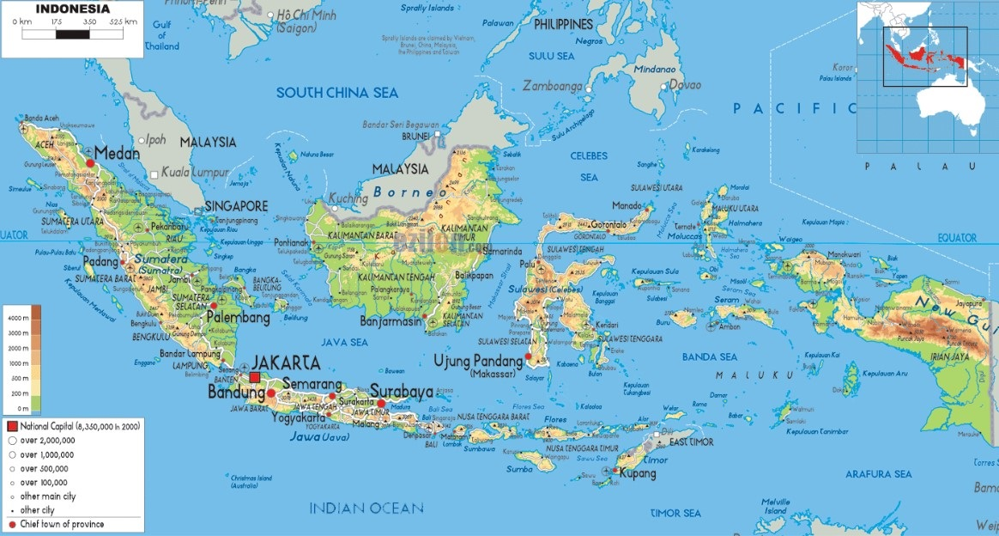

|  | ||
| Negara | : | Indonesia |
| Ibu Kota | : | Jakarta |
| Bahasa Resmi | : | Bahasa Indonesia |
| Kelompok Etnik | : | Kurang lebih 1.340 suku bangsa |
| Agama | : | 6,7% Islam, 10,72% Kristen, 7,60% Protestan, 3,12% Katolik Roma, 74% Hindu, 77% Buddha, 03% Konfusianisme, 0,04% Kepercayaan |
| Demonim | : | Bangsa Indonesia |
| Pemerintahan | : | Negara kesatuan bersistem republik presidensial |
| Presiden | : | Joko Widodo |
| Wakil Presiden | : | Ma'ruf Amin |
| Legislatif | : | Majelis Permusyawaratan Rakyat (MPR) |
| Area | : | 1910931 km2 (737815 sq mi) |
| Penduduk 2020 | : | 270.203.917 |
| Mata uang | : | Rupiah (Rp) (IDR) |
| Zona waktu | : | beragam (UTC+7 sampai +9) |